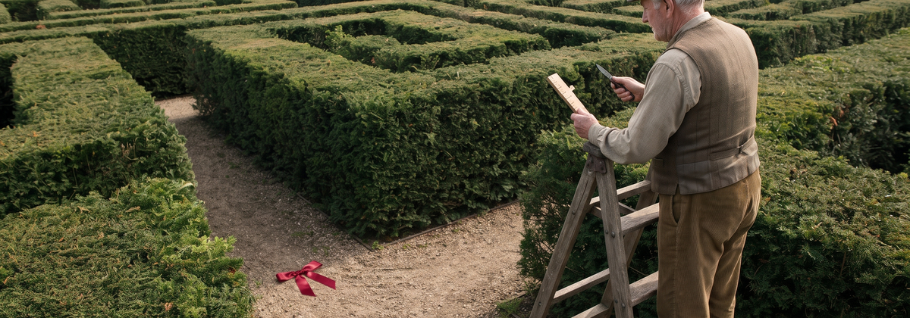

code-ana-code-complexity-check
The Maze Survey. A command line checker that walks a Python file, or every Python file under a directory, and reports the cyclomatic complexity of every function it finds, one counted line per function.

InputOne positional path: a single .py file, or a directory searched recursively for .py files in sorted order
CountHand built on the AST: 1 per function, plus 1 for each branch inside it
OutputOne line per function with its file, line number, and score
DependenciesNone. The standard library is all there is; this repo has no requirements.txt
Usage
python3 main.py PATH [--max-complexity N]
Nested functions are scored separately, never as part of the function containing them. The count adds 1 for each if, loop, except handler, conditional expression, and comprehension filter, and 1 for each extra operand in an and/or chain.
| Option | What it does |
|---|---|
PATH | A Python file, or a directory holding Python files. |
--max-complexity N | Also exit 1 when any function scores over N. There is no default. |

Reading the exit code
- A file that does not parse is reported on stderr and fails the run.
- A path that does not exist exits 1, and so does a directory holding no Python files.
- With --max-complexity set, a function over the limit also exits 1. The same code carries both faults, so the run's text must be read to tell them apart.
- The tool reports cyclomatic complexity only. No other code metric is computed anywhere in it.
Requirements
Python 3 with its standard library. Nothing to install.